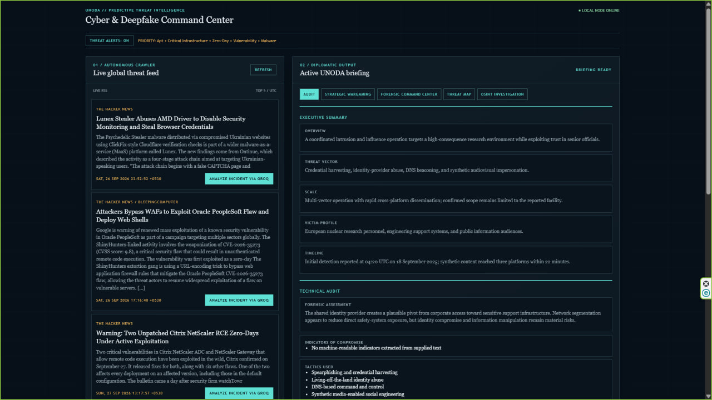
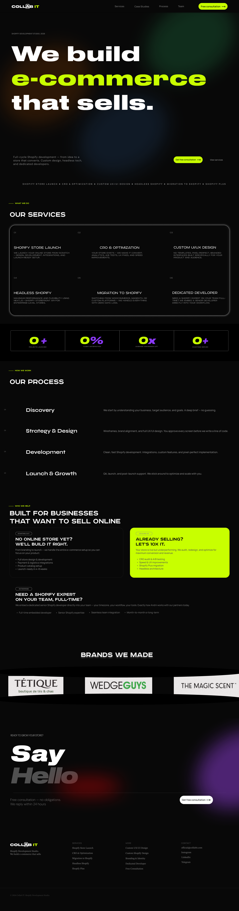
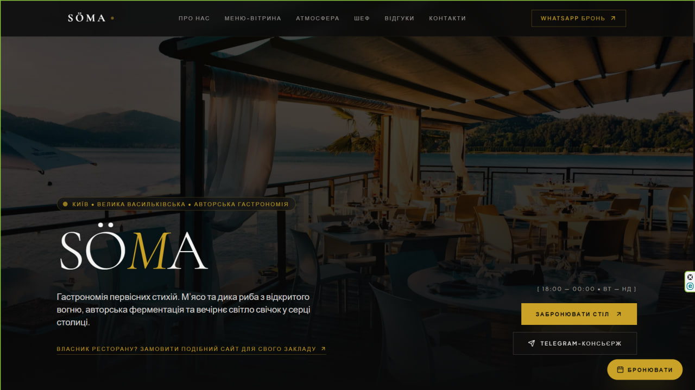
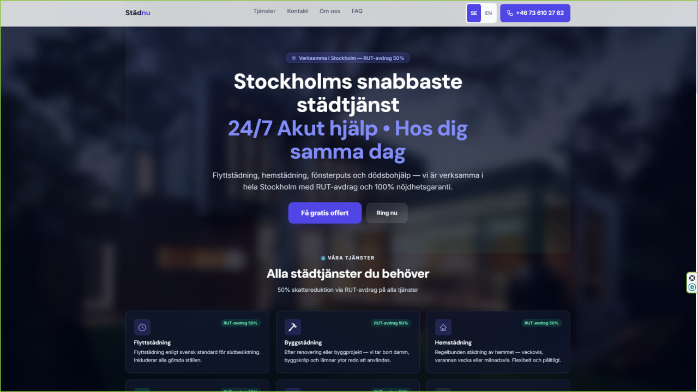

Розробка
Full-stack та AI-coding
Продуктові вебзастосунки: від прототипу до продакшну з інтеграцією передових моделей у ядро продукту.
Обговорити →Назар Семененко
Digital Systems Architect & Cybersecurity Specialist Aiming for UNODA — Global Security Infrastructure
Я проєктую архітектуру систем захисту й веду штучний інтелект як інженерну бригаду: аналіз загроз, інтеграція ШІ в критичну інфраструктуру та розробка високонадійних систем — на швидкості, недоступній командам, що працюють руками рядок за рядком.
Підхід
Інструмент не замінює інженера. Він прибирає з процесу все, що не є мисленням: рутину, бойлерплейт, пошук по документації.
Архітектура — за людиною. Межі системи, модель даних, вимоги до безпеки, точки відмови й те, що станеться з проєктом на другий рік життя — це рішення, які я приймаю сам і за які відповідаю.
Швидкість — за моделями. Реалізація, рефакторинг, тести, документація йдуть паралельними потоками. Я тримаю контекст і перевіряю кожен шар, а не приймаю згенероване на віру.
Так побудовано HORIZON — власну систему моніторингу загроз із автоматизованим парсингом, прив'язкою до матриці MITRE ATT&CK і генерацією офіційних документів англійською та іспанською. Та сама дисципліна застосовується до комерційних замовлень будь-якого масштабу.
Глобальний вплив
Не блог про OSINT, а інфраструктура: збір даних, класифікація загроз і генерація документів, готових лягти на стіл дипломата.
Три роки веду канали військової розвідки з відкритих джерел — щоденна верифікація, картування тактичних змін і фільтрація шуму у форматі, який витримує перевірку.
HORIZON — система моніторингу загроз і ситуаційний центр кіберрозвідки на Python та Groq AI: автоматизований парсинг відкритих джерел, класифікація інцидентів за матрицею MITRE ATT&CK, симуляція кібервоєнних сценаріїв і генерація офіційних дипломатичних нот англійською та іспанською для міжнародних місій.
OSINT / РОЗВІДКА
Ведення каналів військової розвідки з відкритих джерел: верифікація, геолокація, побудова хронології подій без доступу до закритих каналів.
MITRE ATT&CK
Прив'язка інцидентів до тактик і технік матриці ATT&CK — той самий словник, яким користуються аналітики державних CERT.
СИТУАЦІЙНИЙ ЦЕНТР
Автоматизований парсинг джерел, оцінка загроз і панель ситуаційної обізнаності — робоча інфраструктура, а не дашборд для демонстрації.
ДИПЛОМАТИЧНІ ДОКУМЕНТИ
ШІ-конвеєр, що перетворює необроблені дані на офіційні аналітичні ноти у форматі, прийнятному для міжнародних місій.
СИМУЛЯЦІЯ
Побудова сценаріїв ескалації для стрес-тестування систем реагування — до того, як подія стається насправді.
HORIZON — Threat Intelligence System
Selected system / 01
Стек
Кожен блок — це те, що я віддаю під ключ: від першого ескіза інтерфейсу до задеплоєного бекенду з документацією.
Розробка
Продуктові вебзастосунки: від прототипу до продакшну з інтеграцією передових моделей у ядро продукту.
Обговорити →Інтелект
Проєктування пайплайнів, оптимізація промптів і вартості інференсу, робота з API та власною логікою агентів.
Обговорити →Інтерфейси
Інтерфейси, які виглядають дорого й не заважають працювати: дизайн-система, макети, готові до передачі в код.
Обговорити →Автоматизація
Збір і обробка відкритих даних, Telegram-боти, складні інтеграції API, контроль безпеки на рівні системи.
Обговорити →Проєкти
 01 / 06
Інфографіка · Telegram
01 / 06
Інфографіка · Telegram
Інфографіка для Telegram-каналу — карта областей, які можуть бути під загрозою БпЛа або ракет.
 02 / 06
Інфографіка · Telegram
02 / 06
Інфографіка · Telegram
Інфографіка для Telegram-каналу — динамічна карта руху ворожих цілей у режимі реального часу.

03 / 06 AI · AutomationІнтелектуальна система аналізу загроз на базі LLM з генерацією розвідувальних звітів документів.

04 / 06 Full-stack · TrainingТренувальний проект для компанії Collab IT — корпоративний застосунок із командними процесами та дашбордами.

05 / 06 UI/UX · RestaurantТренувальний проект сайту ресторану з преміальним дизайном, меню та системою онлайн-бронювання.

06 / 06 Web · SwedenПроданий сайт для шведської компанії клінінгу та прибирання — повністю адаптивний, мультимовний.
Процес
П'ять кроків від першого повідомлення до задеплоєної системи. Без сюрпризів по дорозі.
01
Розбір задачі, меж системи й ризиків. Чи взагалі варто це будувати саме так.
02
Модель даних, стек, точки відмови, план безпеки — до того, як написано перший рядок коду.
03
Реалізація паралельними потоками під моїм постійним контролем кожного шару.
04
Перевірка на крайових випадках, безпека, продуктивність — перед тим, як показати вам.
05
Розгортання, документація й доступи, з якими команда може жити без мене.
Компетенції
Без вигаданих клієнтів, сертифікатів чи нагород — тільки те, з чим реально працюю.
Відгуки
Хороший парень, знающий своё діло. Вміє робити сайти і автоматизувати різні процеси, розбирається в кодингу, може написати програму з нуля або взяти вже готову і нормально її допрацювати. По самому людині теж всё добре — нормально відноситься до задач і завжди можна спокійно все обговорити. В загальному залишився задоволений роботою і можу спокійно рекомендувати.
Дуже чоткі дизайни робиш, рекомендую.
Це реально класна робота. Працювали з ним особисто — залишились тільки позитивні емоції від його роботи.
Умови
Це фільтр, а не формальність. Якщо умови підходять — далі буде швидко й спокійно.
50% передплати
Завжди, без винятків. Тестових завдань «просто подивитися, як ви працюєте» не виконую. Портфоліо й розмова на 15 хвилин показують рівень краще за безкоштовний спринт.
Результат без води
Дедлайн — це дата, а не побажання. Статус видно на кожному етапі, а не в день здачі. Якщо щось піде не за планом, ви дізнаєтесь про це першим і завчасно.
Чітко за ТЗ
Робота за технічним завданням або через безпечну угоду. На виході — чистий структурований код, документація й доступи, з якими ваша команда зможе жити без мене.
FAQ
Веб-застосунки, AI-системи, автоматизацію, Telegram-ботів, дизайн-системи та інтеграції — від ідеї до задеплоєної системи.
З короткого опису задачі в Telegram або на пошту. У відповідь — оцінка строків і чи берусь я за проєкт взагалі.
Так, якщо структура кодової бази дозволяє працювати без ризику для стабільності системи.
Так — пайплайни на LLM API, обробка відкритих даних, боти й агентна логіка це основний профіль роботи.
50% передплати перед стартом, решта — після здачі. Деталі узгоджуються за технічним завданням.
Чистий структурований код, документацію та доступи — команда зможе жити із системою без мене.
Опишіть задачу — я скажу, що можна побудувати, скільки це триватиме, і чи берусь я за неї взагалі.